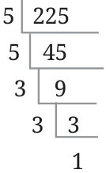

From the prime factorisation of a number, we can construct all its factors. This can be used to simplify the procedure for finding the HCF of two numbers. Consider the number 840 and its prime factorisation \(2 \times 2 \times 2 \times 3 \times 5 \times 7\).
Is \(2 \times 2 \times 7 = 28 a\) factor of 840?
If yes, what should it be multiplied by to get 840? To answer these questions, we can reorder the prime factors of 840 as follows (recall that reordering factors does not change the product):
\(840 = (2 \times 2 \times 7) \times (2 \times 3 \times 5)\).
So,
\(840 = 28 \times 30\).
Thus, \((2 \times 2 \times 7) = 28\) is a factor of 840, and it should be multiplied by
\(30 (2 \times 3 \times 5)\) to get 840.
Similarly, is \(2 \times 7 = 14 a\) factor of 840? Why or why not? Is \(2 \times 2 \times 2 a\) factor of 840? Why or why not?
Is \(3 \times 3 \times 3 a\) factor of 840? Why or why not? Can we use this idea to list down all the possible factors of a number using just its prime factors?
Find the factors of 225 using prime factorisation.

Factorising 225 to its primes, we get
\(225 = 5 \times 5 \times 3 \times 3\).
We have seen that any ‘subpart’ of this factorisation gives us a factor. Let us systematically form these subparts. Prime factors: 3, 5. Combination of two prime factors: \(3 \times 3 = 9\), \(5 \times 5 = 25\), \(3 \times 5 = 15\). Combination of three prime factors: \(3 \times 3 \times 5 = 45\), \(3 \times 5 \times 5 = 75\). Combination of four prime factors: \(3 \times 3 \times 5 \times 5 = 225\). Adding 1 to this list of factors, we see that the factors of 225 are 1, 3, 5, 9, 15, 25, 45, 75, 225. Check that all the factors of 225 occur in this list.